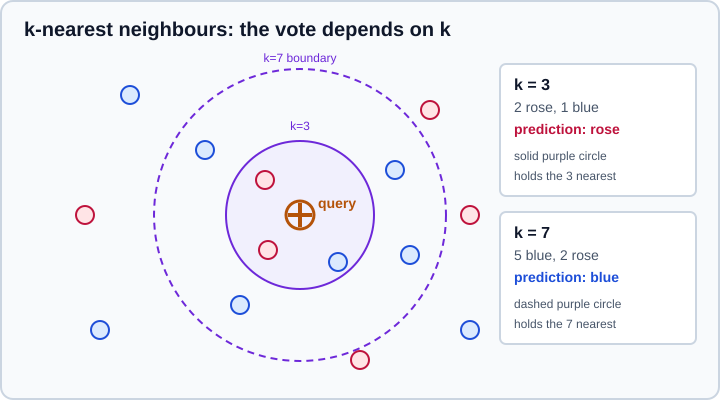
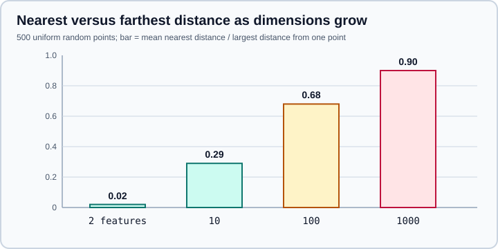

Nearest Neighbors
|
This content was generated with the assistance of AI and should be verified against the official documentation before being relied on in production. |
Nearest-neighbour methods predict a new point from the training points closest to it. There is no model to fit in the usual sense: the training data is stored (and indexed to make searches fast) and all the work happens at prediction time. This page targets NumPy 2.5 and scikit-learn 1.9, was checked in October 2026, and every example was run on Python 3.13.18, NumPy 2.5.4 and scikit-learn 1.9.1. Examples target Python 3.13 or 3.14. Scores and timings will differ slightly with other versions.
The estimators live in sklearn.neighbors. They share the contract described in The Estimator API; the surrounding workflow (splitting, scaling inside a pipeline) is covered in Pipelines and Train/Test Split. For a comparison with other classifiers see Choosing the Right Estimator.
The idea
Given a query point, find its k nearest training points under a distance metric, then combine their targets: a majority vote for classification, a mean for regression. The prediction is only as good as the distance. Two consequences follow, and most mistakes with these models come from one of them:
-
the features must be on comparable scales, because a feature with a large numeric range dominates the distance;
-
the result depends on
k, which controls how local the decision is.

The estimator family
| Class | Neighbourhood | Typical use |
|---|---|---|
|
The |
Classification with a fairly uniform density |
|
The |
Smooth regression on low-dimensional data |
|
All points within |
Non-uniform density; points with no neighbour can get an |
|
One centroid per class; predicts the class of the closest centroid |
A fast, tiny baseline; |
|
Unsupervised search only: |
Building blocks, recommendations, outlier detection |
|
Compute a sparse neighbour graph as a pipeline step |
Share one neighbour search between several estimators |
|
Learns a linear transformation that makes k-NN accurate |
Supervised dimensionality reduction before k-NN |
|
Density estimation and outlier scores built on the same trees |
Source: scikit-learn: Nearest Neighbors
Classification and the effect of scaling
The wine data set has 13 chemical measurements with very different ranges: proline spans about 1400 units while alcohol spans about 3. Without scaling, proline decides almost every neighbour.
import numpy as np
from sklearn.datasets import load_wine
from sklearn.model_selection import train_test_split
from sklearn.neighbors import KNeighborsClassifier
from sklearn.pipeline import make_pipeline
from sklearn.preprocessing import StandardScaler
X, y = load_wine(return_X_y=True)
X_tr, X_te, y_tr, y_te = train_test_split(X, y, test_size=0.3, stratify=y, random_state=0)
raw = KNeighborsClassifier(n_neighbors=5).fit(X_tr, y_tr)
scaled = make_pipeline(StandardScaler(), KNeighborsClassifier(n_neighbors=5)).fit(X_tr, y_tr)
print("raw ", round(raw.score(X_te, y_te), 3))
print("scaled ", round(scaled.score(X_te, y_te), 3))
print("feature ranges:", np.round(np.ptp(X_tr, axis=0)[[0, 12]], 1), "(alcohol, proline)")Output:
raw 0.722 scaled 0.963 feature ranges: [ 3.4 1402. ] (alcohol, proline)
Scaling lifted the held-out accuracy from 0.722 to 0.963 with no other change. The scaler is inside the pipeline so that, under cross-validation, it is fitted on each training fold only; fitting it on all the data first would leak information from the validation rows (see Model Evaluation & Validation). StandardScaler, MinMaxScaler and RobustScaler are described on Scaling & Transforming Features.
predict_proba returns the fraction of the k neighbours in each class (or the weighted fraction with distance weights), so with k=5 it only takes values such as 0, 0.2, 0.4 and so on. Those numbers are coarse and are not calibrated probabilities; wrap the model in CalibratedClassifierCV if you need calibrated ones (Probability Calibration). When two classes tie, predict picks the class that comes first in classes_, which is deterministic but arbitrary; an odd k avoids ties in two-class problems.
Choosing k and the weights
n_neighbors is the main hyperparameter. k=1 memorises the training set (zero training error, high variance); a very large k approaches the majority class (high bias). The weights argument chooses how neighbours vote: "uniform" (default) counts each equally, "distance" weights each by the inverse of its distance, and a callable receives an array of distances and returns an array of weights.
from sklearn.model_selection import GridSearchCV
pipe = make_pipeline(StandardScaler(), KNeighborsClassifier())
grid = GridSearchCV(
pipe,
{"kneighborsclassifier__n_neighbors": [1, 3, 5, 7, 9, 15, 25],
"kneighborsclassifier__weights": ["uniform", "distance"]},
cv=5,
)
grid.fit(X_tr, y_tr)
print(grid.best_params_)
print("cv", round(grid.best_score_, 3), "test", round(grid.score(X_te, y_te), 3))Output:
{'kneighborsclassifier__n_neighbors': 25, 'kneighborsclassifier__weights': 'uniform'}
cv 0.976 test 0.981
Parameters of a step inside a pipeline are addressed as the lower-case step name, two underscores and the parameter name; the search machinery is covered on Grid, Randomized & Halving Search. A cross-validated search over k is the right way to choose it: do not pick the value that scores best on the test set. On a data set this small the differences between neighbouring values of k are within noise, so prefer the simpler (smaller or more stable) setting when scores are tied. The curves are easier to read with validation curves.
Distance metrics
The default metric is "minkowski" with p=2, which is the Euclidean distance; p=1 is Manhattan. Any name in sklearn.neighbors.VALID_METRICS can be passed, including "euclidean", "manhattan", "chebyshev", "cosine", "haversine" (latitude and longitude in radians), and the Hamming, Jaccard and other boolean metrics. metric_params carries extra arguments (for example the inverse covariance matrix of "mahalanobis"), and a Python callable is accepted but is much slower because it is called for each pair.
from sklearn.model_selection import cross_val_score
for metric in ["euclidean", "manhattan", "chebyshev", "cosine"]:
model = make_pipeline(StandardScaler(), KNeighborsClassifier(5, metric=metric))
print(f"{metric:<10}", round(cross_val_score(model, X, y, cv=5).mean(), 3))Output:
euclidean 0.949 manhattan 0.95 chebyshev 0.904 cosine 0.944
The metric changes the answer, but less than scaling does, and the ranking depends on the data. The cosine metric ignores vector length, which is why it is popular for text and embeddings; sparse input is accepted with "brute" search and the metrics that support it (sklearn.neighbors.VALID_METRICS_SPARSE). For one-hot encoded categorical features a Hamming-like metric is more natural than Euclidean; see Encoding Categorical Features.
Regression
KNeighborsRegressor averages the targets of the neighbours. Its prediction is piecewise constant, so a small k gives a jagged fit and a large k a smooth, flatter one, and it never predicts outside the range of the training targets (it cannot extrapolate).
from sklearn.neighbors import KNeighborsRegressor
rng = np.random.default_rng(0)
Xr = np.sort(5 * rng.random((60, 1)), axis=0)
yr = np.sin(Xr).ravel() + rng.normal(0, 0.15, 60)
for k in (1, 5, 20):
reg = KNeighborsRegressor(n_neighbors=k).fit(Xr, yr)
print(f"k={k:<3} training R2 {reg.score(Xr, yr):.3f}")Output:
k=1 training R2 1.000 k=5 training R2 0.962 k=20 training R2 0.889
The training score of 1.000 at k=1 is the memorisation described above and says nothing about new data (each training point is its own nearest neighbour). "distance" weights also make a training point predict itself exactly, so evaluate on held-out data only.
Radius neighbours and NearestCentroid
RadiusNeighborsClassifier uses every training point within a fixed radius. It suits data whose density varies, but a query with no neighbour inside the radius has no vote; outlier_label says what to return (a label, "most_frequent", or None to raise an error). The right radius depends on the scale of the features, so choose it after scaling.
from sklearn.neighbors import NearestNeighbors
Xs = StandardScaler().fit_transform(X)
for radius in (1.0, 2.5, 4.0):
nn = NearestNeighbors(radius=radius).fit(Xs)
counts = np.array([len(a) for a in nn.radius_neighbors(Xs, return_distance=False)])
print(f"radius {radius}: neighbours per point min={counts.min()} median={int(np.median(counts))} max={counts.max()}")Output:
radius 1.0: neighbours per point min=1 median=1 max=1 radius 2.5: neighbours per point min=1 median=9 max=30 radius 4.0: neighbours per point min=2 median=55 max=96
Each point counts itself because the same data was used to fit and to query, so a minimum of 1 means a point with no other neighbour. At radius 1.0 every point is isolated in the 13-dimensional standardised space, which would make a radius classifier useless, while 2.5 gives a median of 9. A fixed radius therefore behaves very differently from a fixed k as dimensions grow.
NearestCentroid summarises each class by one centroid, so it is extremely fast and small, and it gives a useful baseline:
from sklearn.neighbors import NearestCentroid
nc = make_pipeline(StandardScaler(), NearestCentroid()).fit(X_tr, y_tr)
print("nearest centroid", round(nc.score(X_te, y_te), 3))Output:
nearest centroid 0.981
On this data a single centroid per class is as good as 5 neighbours, a reminder to compare with a simple baseline (see Machine Learning Fundamentals). NearestCentroid assumes convex, similar-sized classes. Since scikit-learn 1.5 its metric accepts only "euclidean" and "manhattan"; shrink_threshold shrinks centroids towards the overall centroid, which drops features that do not separate the classes.
Search algorithms
Finding neighbours naively costs one distance per training point per query. The algorithm parameter chooses how to speed that up.
| Value | How it works | When it is best |
|---|---|---|
|
Computes all distances (vectorised, with a fast path for common metrics) |
Large dimensionality, small data, sparse input, or large |
|
Splits space along coordinate axes ( |
Low dimensionality (roughly under 15 features) with a few supported metrics |
|
Splits space into nested hyperspheres ( |
Higher dimensionality than the KD tree allows, and many metrics |
|
Chooses among the three from the data |
The default; it picks |
leaf_size (default 30) sets the point count at which a tree stops splitting. It affects speed and memory but never the result. The chosen method is stored in the private attribute _fit_method, which is useful to check what "auto" did:
from sklearn.datasets import make_blobs, make_classification
Xb, _ = make_blobs(n_samples=20000, n_features=5, random_state=0)
print(NearestNeighbors(algorithm="auto").fit(Xb)._fit_method)
Xc, yc = make_classification(50000, 20, random_state=0)
print(KNeighborsClassifier().fit(Xc, yc)._fit_method)Output:
kd_tree brute
Five features chose a KD tree and 20 features chose brute force. The attribute is private, so use it to learn, not in production code. Whatever the algorithm, memory grows with the training set (the data and the tree are kept), and each prediction costs a search: a k-NN model has fast training and slow prediction, the reverse of most estimators. Pass n_jobs=-1 to parallelise queries over the training data.
The curse of dimensionality
In high dimensions all points become almost equally far apart, so "nearest" carries little information, and trees stop pruning effectively. The experiment below measures, for 500 uniform random points, the average distance to the nearest neighbour divided by the largest distance from one point to the others:
rng = np.random.default_rng(0)
for d in (2, 10, 100, 1000):
P = rng.random((500, d))
dist, _ = NearestNeighbors(n_neighbors=2).fit(P).kneighbors(P)
farthest = np.linalg.norm(P[:1] - P[1:], axis=1).max()
print(f"{d:>5} features: nearest/farthest = {dist[:, 1].mean() / farthest:.2f}")Output:
2 features: nearest/farthest = 0.02 10 features: nearest/farthest = 0.29 100 features: nearest/farthest = 0.68 1000 features: nearest/farthest = 0.90
Source: scikit-learn: Nearest Neighbors

The remedies are fewer, better features (Feature Selection), dimensionality reduction (PCA, TruncatedSVD & NMF), or a learned metric, described next. For embeddings with millions of vectors use an approximate index rather than exact search: see ANN indexes and FAISS.
Neighbour graphs and precomputed distances
NearestNeighbors.kneighbors_graph and radius_neighbors_graph return a sparse matrix whose entry is 1 (mode="connectivity") or the distance (mode="distance") between neighbours. The transformers KNeighborsTransformer and RadiusNeighborsTransformer produce the same matrix as a pipeline step, so that a later estimator that accepts metric="precomputed" (k-NN, DBSCAN, Isomap, t-SNE, spectral clustering) reuses one search. With memory= on the Pipeline, the graph is computed once while a grid search varies n_neighbors:
from tempfile import TemporaryDirectory
from sklearn.datasets import load_digits
from sklearn.neighbors import KNeighborsTransformer
from sklearn.pipeline import Pipeline
X, y = load_digits(return_X_y=True)
with TemporaryDirectory() as cache:
pipe = Pipeline(
[("graph", KNeighborsTransformer(mode="distance", n_neighbors=30, metric="euclidean")),
("knn", KNeighborsClassifier(metric="precomputed"))],
memory=cache,
)
grid = GridSearchCV(pipe, {"knn__n_neighbors": [1, 3, 5, 10, 20]}, cv=5).fit(X, y)
print(grid.best_params_, round(grid.best_score_, 3))Output:
{'knn__n_neighbors': 3} 0.966
The transformer computes 30 neighbours, which is at least as many as any n_neighbors tried afterwards, because the classifier can use fewer neighbours than the graph holds but never more. A graph computed with mode="distance" is also what a precomputed metric expects.
Learning a metric with NCA
NeighborhoodComponentsAnalysis learns a linear transformation that maximises the leave-one-out k-NN accuracy. Used before KNeighborsClassifier it can improve accuracy and reduces dimensionality at the same time; it needs scaled inputs and random_state.
from sklearn.neighbors import NeighborhoodComponentsAnalysis
base = make_pipeline(StandardScaler(), KNeighborsClassifier(5)).fit(X_tr, y_tr)
nca = make_pipeline(
StandardScaler(),
NeighborhoodComponentsAnalysis(n_components=2, random_state=0),
KNeighborsClassifier(5),
).fit(X_tr, y_tr)
print("k-NN", round(base.score(X_te, y_te), 3), "NCA + k-NN", round(nca.score(X_te, y_te), 3))Output:
k-NN 0.963 NCA + k-NN 1.0
Two NCA dimensions separated the three classes on this split. With 54 test rows, one more correct row changes the score by about 0.02, so do not read much into one split: repeat with cross-validation before concluding that NCA helps on your own data.
Pitfalls
-
Unscaled features. Always put a scaler in the pipeline (see the first example). Features with no meaning on a common scale, such as categorical codes, should not be fed in as numbers.
-
Prediction cost and memory. The model keeps all training data. Millions of rows need a tree, sub-sampling, or an approximate index.
-
High dimensions. Reduce dimensions or select features first.
-
Missing values. The estimators reject
NaN; useKNNImputerfor imputation (Imputing Missing Values), which applies k-NN to fill gaps. -
Class imbalance. The majority class dominates votes; use
"distance"weights or rebalance (Model Evaluation & Validation). -
Evaluating on training data. A point is its own nearest neighbour when fit and query data coincide; that inflates scores.
-
Old tutorials. Code importing
sklearn.cross_validationorsklearn.grid_searchpredates scikit-learn 0.18, and every argument after the first positional ones must be passed by keyword since 1.0; both are covered on Glossary of Key Terms and The Estimator API.